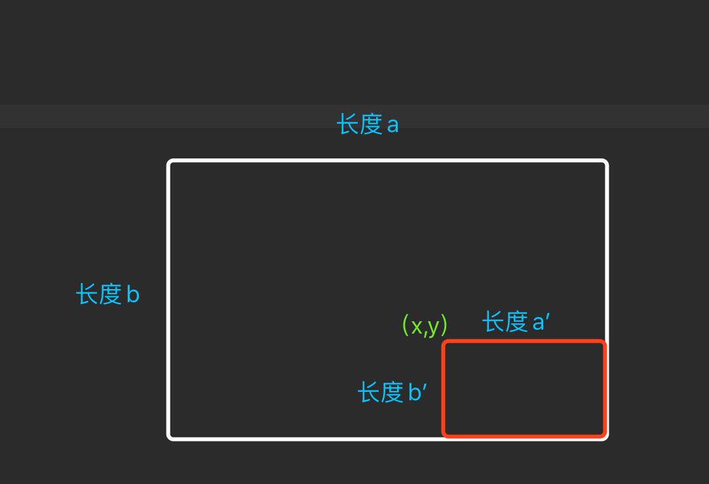

由于国庆前一阵子微信头像添加国旗刷爆朋友圈，节后换头像时无意中思考了下原理，感叹技术有复杂程序高大上的，也有能引起一时风靡但背后却简单无比的，就以这次的头像添加国旗功能为例。
原理：
上传图片的我们不细讲，懂的自然懂，不懂的百度、google去。关键也只是怎么把国旗画到头像的右下角去，我们看下计算思路图片。
外面白色的就是用户头像，里面红色的为国旗的位置，根据Graphics2D的drawImage方法。
/**
* 绘画
*
* @param img 要绘制的图像，这里就是国旗
* @param x 横坐标起点
* @param y 纵坐标起点
* @throws width 绘制的高度
* @param height 绘制的高度
* @throws observer 图片观察者，传null即可
*/
drawImage(Image img,
int x, int y,
int width, int height,
ImageObserver observer)
我们只需要把x和y的坐标求出来，就可以实现把国旗画到头像右下角的位置了。x和y也很好求，只要用大图的横纵长度-小图的横纵长度就能分别求出x和y。
实现（伪代码）：
//读取传进来的头像图片
BufferedImage icon = ImageIO.read(new InputStream("....头像"));
//创建头像的画布
Graphics2D icon2D = icon.createGraphics();
//用BufferedImage读取国旗图片
BufferedImage flag = ImageIO.read(new InputStream("...国旗"));
//计算出开始画图的坐标点，横坐标为
int x = icon.getWidth() - flag.getWidth();
int y = icon.getHeight() - flag.getHeight();
//在头像画布上开始画
icon2D.drawImage(flag,x,y,flag.getWidth(),flag.getHeight(),null);
//销毁头像画布
icon2D.dispose();
//保存
ImageIO.write(icon,"jpg",new File("...保存到新文件"));
光说没用，恒哥已经做了个简易版的，由于时间关系，页面也是最简单的版本。
体验
〔完〕
写留言
请留下您想说的：